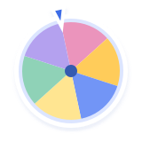

依据与范围
- 用户最新明确要求优先；业务范围、行为与发布验收以首版规格为准，视觉表现与资源使用以本规范为准。
- 效果图提供视觉方向，运行截图记录采集时布局；提示词、示例文案和展示外壳不覆盖现行规范。
- Flutter 应用尚未实现；HTML 演示和截图的验证范围见检查记录。

01 / VISUAL DIRECTION
9 张当前稿，覆盖 12 个页面。保留原图比例，点击可放大；组合图可对应多个页面。提示词为历史生成记录。资源与提示词说明 ↗
02 / FROM IMAGE TO INTERACTION
六项随机工具可播放当前演示；其余页面仅保留历史截图，原完整应用样板源码未纳入仓库。卡片中的逻辑标识用于清单关联，不是页面锚点或应用路由。独立打开动效样板 ↗
显示 12 个页面
home课程时间与地点优先；逾期任务保留，状态同时使用文字。
timetable课程色用于识别课程；今天高亮，横纵网格保持清晰。
tasks学习任务具有明确截止时间和完成状态，与倒计时事件分开。
events使用日历日期计算剩余天数，当天显示“就是今天”；使用彩纸和大数字。
tools两列圆角色块、统一贴纸插画；只展示首版六项工具。
draw同名成员分别保留；离开页面保留轮次，修改名单前说明重置影响。
settings普通设置行按分组组织；通知展示真实状态，正式应用适配设备安全区域。
tool-wheel转盘随可用宽度适配，393px 视口下约 353px 作为参考；选项仅显示用户文字，沿扇区半径排布并处理朝向；固定指针与结果一致。
tool-groups完成后所有姓名标签水平排列；洗牌与逐张发牌表现见 HTML 动效参考，分组人数规则见首版规格。
tool-lottery桃色签袋配 spark-yellow.svg、spark-lavender.svg 的实心浅色白边星星，签文完整可读；纸签姿态与落位见 HTML 动效参考，轮次规则见状态反馈与首版规格。
tool-die单颗六面骰，展示点数与文字结果一致；六面结构、翻滚与落地回弹见 HTML 动效参考。
tool-coin单枚硬币，星星正面、月牙反面，展示币面与文字结果一致；上抛与翻转见 HTML 动效参考。
没有匹配页面，试试其他名称。
03 / REUSABLE BY DESIGN
37 个界面图标、18 个贴纸与场景插画、4 个材质文件。点击素材即可下载；文件统一保存在 resources，供后续页面复用。
轻轻增加触感，
让内容始终清晰。
独立 SVG 蒙版，
适合便笺和结果区。
材质可以组合，
记得避开点击区域。
显示 59 个素材
arrow.svg项目内 SVG · 下载 ↓返回back.svg项目内 SVG · 下载 ↓口袋标识badge.svg项目内 SVG · 下载 ↓提醒bell.svg项目内 SVG · 下载 ↓书本book.svg项目内 SVG · 下载 ↓日历calendar.svg项目内 SVG · 下载 ↓完成check.svg项目内 SVG · 下载 ↓时间clock.svg项目内 SVG · 下载 ↓关闭close.svg项目内 SVG · 下载 ↓硬币coin.svg项目内 SVG · 下载 ↓骰子die.svg项目内 SVG · 下载 ↓展开down.svg项目内 SVG · 下载 ↓下载download.svg项目内 SVG · 下载 ↓导出export.svg项目内 SVG · 下载 ↓文件夹folder.svg项目内 SVG · 下载 ↓时区globe.svg项目内 SVG · 下载 ↓工具箱grid.svg项目内 SVG · 下载 ↓收藏heart.svg项目内 SVG · 下载 ↓首页home.svg项目内 SVG · 下载 ↓说明info.svg项目内 SVG · 下载 ↓素材layers.svg项目内 SVG · 下载 ↓上一项left.svg项目内 SVG · 下载 ↓地点location.svg项目内 SVG · 下载 ↓更多more.svg项目内 SVG · 下载 ↓置顶pin.svg项目内 SVG · 下载 ↓添加plus.svg项目内 SVG · 下载 ↓恢复restore.svg项目内 SVG · 下载 ↓下一项right.svg项目内 SVG · 下载 ↓搜索search.svg项目内 SVG · 下载 ↓设置settings.svg项目内 SVG · 下载 ↓随机shuffle.svg项目内 SVG · 下载 ↓星星star.svg项目内 SVG · 下载 ↓任务task.svg项目内 SVG · 下载 ↓抽签ticket.svg项目内 SVG · 下载 ↓成员users.svg项目内 SVG · 下载 ↓警告warning.svg项目内 SVG · 下载 ↓转盘wheel.svg项目内 SVG · 下载 ↓badge.svg项目内 SVG · 下载 ↓书本book.svg项目内 SVG · 下载 ↓日历calendar.svg项目内 SVG · 下载 ↓星星正面coin-head.svg项目内 SVG · 下载 ↓月牙反面coin-tail.svg项目内 SVG · 下载 ↓硬币coin.svg项目内 SVG · 下载 ↓骰子die.svg项目内 SVG · 下载 ↓纸签draw.svg项目内 SVG · 下载 ↓旗帜flag.svg项目内 SVG · 下载 ↓文件夹folder.svg项目内 SVG · 下载 ↓分组groups.svg项目内 SVG · 下载 ↓签袋lottery-bag.png内置生图 · 下载 ↓铅笔pencil.svg项目内 SVG · 下载 ↓口袋吉祥物pocket.png内置生图 · 下载 ↓淡紫白边星星spark-lavender.svg项目内 SVG · 下载 ↓浅黄白边星星spark-yellow.svg项目内 SVG · 下载 ↓太阳sun.svg项目内 SVG · 下载 ↓
转盘wheel.svg项目内 SVG · 下载 ↓微纤维paper-fibers.svg项目内 SVG · 下载 ↓细纸纹paper-grain.png内置生图 · 下载 ↓撕纸边torn-edge.svg项目内 SVG · 下载 ↓和纸胶带washi-tape.svg项目内 SVG · 下载 ↓没有匹配素材，试试中文名或英文文件名。
SVG 为项目内资源；透明口袋、签袋与纸纹由内置生图生成。新引入的第三方素材需记录来源和许可。界面文字保留为真实文本。
04 / ONE SHARED VISUAL LANGUAGE
以下规则与 AI 文档版共用同一份内容。配色、间距和阴影读取独立保存的视觉变量；后续设计从已有成果继续。
本地中文无衬线 · 4px 间距基准 · 常规左右留白 20px
纸纹、胶带、撕边和贴纸局部使用。文字和操作始终优先。
查看全部变量 ↗以下为六项随机工具的 HTML 动效表现参考，时长、圈数及三维翻转用于展示动作。正式应用的结果与轮次要求见“状态反馈”和首版规格；Android 首版采用简化反馈，复杂动画后置。
KEEP IT IN SYNC
两版手册由同一资源清单生成；更新方式和验证结果分别在维护说明与检查记录中查阅。